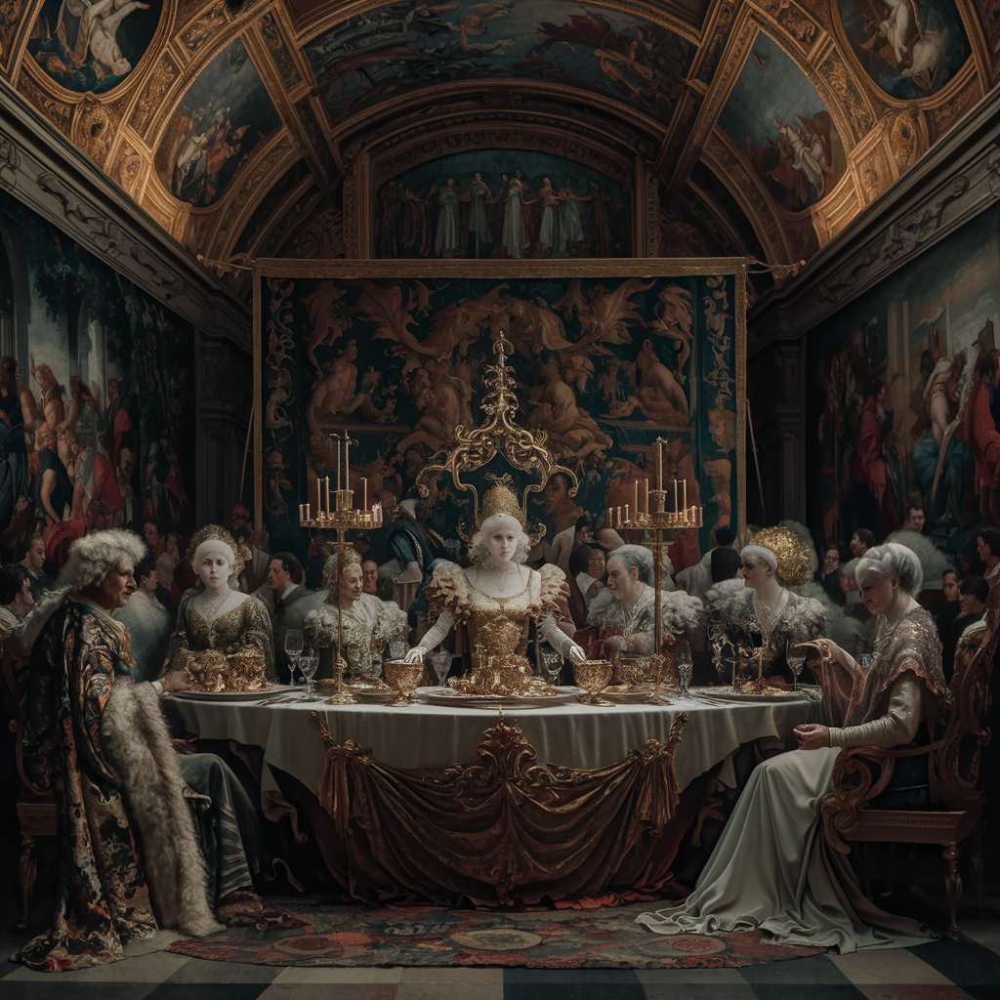

¡Bienvenidos al fascinante mundo del arte renacentista! Aquí, las pinceladas maestras de Leonardo da Vinci, la majestuosidad de Miguel Ángel y la elegancia de Donatello se entrelazan en un ballet de creatividad y humanismo.
El Renacimiento, ese período de esplendor entre los siglos XIV y XVI, marcó la transición de la Edad Media a la modernidad. Los artistas, inspirados por la antigüedad clásica, exploraron temas profanos: paisajes, retratos y mitología. La ciencia y la tecnología permitieron una observación detallada de la naturaleza, plasmada en obras de arte que aún nos asombran.
Adéntrate en esta galería y descubre cómo el Renacimiento dejó una huella imborrable en nuestra cultura y en el alma de la humanidad. ¡Bienvenidos a un viaje en el tiempo donde la creatividad y la pasión se funden en lienzos y esculturas que trascienden los siglos!